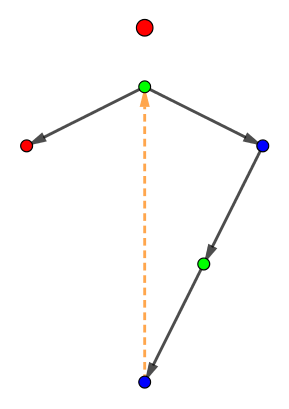

给定集合 $\left\{ 1, 2, \cdots, N \right\}$ 的 $N - 1$ 个子集 $E_1, E_2, \cdots, E_{N-1}$，保证 $\left| E_i \right| \geq 2$。
你现在需要在每个集合 $E_i$ 中选出两个不同的元素 $u_i, v_i$ ($u_i, v_i \in E_i; u_i \neq v_i$)，然后考虑 $T = \left( V, E \right)$，其中 $V = \left\{ 1, 2, \cdots, N \right\}, E = \left\{ \left( u_i, v_i \right) \mid 1 \leq i \leq N - 1 \right\}$。
询问是否存在一种合适的选择 $u_i, v_i$ 的方式，使得 $T$ 是一棵树。如果存在，并给出一组构造。
第一行包含一个正整数 $N$ ($2 \leq N \leq 10^5$)，表示全集的元素个数。
接下来 $N - 1$ 行，每行的第一个正整数 $\left| E_i \right|$ ($\displaystyle 2 \leq \left| E_i \right| \leq N; \sum_{i=1}^{N-1} \left| E_i \right| \leq 2 \times 10^5$) 表示第 $i$ 个子集 $E_i$ 的大小，后面紧跟 $\left| E_i \right|$ 个互不相同的正整数 $e_{i, 1}, e_{i, 2}, \cdots, e_{i, \left| E_i \right|}$ ($1 \leq e_{i, j} \leq N$)，描述集合 $E_i$ 中的元素。
如果无论怎么选择 $u_i, v_i$，$T$ 都不是树，输出一行 $-1$。
否则，输出 $N - 1$ 行，第 $i$ 行的两个整数表示 $u_i, v_i$。你需要保证 $u_i, v_i \in E_i; u_i \neq v_i$ 且这 $N - 1$ 条边恰好构成一棵树。
参考 [Codeforces611H]New Year and Forgotten Tree，我们固定一个点为根后，剩下的 $N - 1$ 点和 $N - 1$ 条边之间存在一个双射 (点 $v \leftrightarrow$ 边 $\left( v, p_v \right)$)。
因此，如果建立一个二分图，左部为非根的 $N - 1$ 个点，右部代表边 $\left( u, v \right)$，代表树点的顶点和代表树边的顶点有 (二分图的) 边相连，当且仅当这个树点和这条树边相关联。
于是，这个二分图就应该有上述的完美匹配 —— 树点 $v$ 与树边 $\left( v, p_v \right)$ 匹配。
现在，只不过是把边替换成了集合。原先，一个 "边" 向两个 "点" 相连，现在，对于一个集合 (我们把它看做二分图右部的一个顶点)，向它内部的元素 (所对应的左部顶点) 相连。
虽然这样边更多了，但是如果有解，完美匹配还是存在的 —— 对于点 $v$，找到 $\left( v, p_v \right)$ 所在的集合即可。
于是，我们尝试去寻找这样一个完美匹配，即集合与元素之间的匹配。
不过，这样，固定根后有匹配并不是有解的 —— 具体的例子可以参见那道题中的图：
那该怎么办呢？这道题中由于 $N$ 很大，维护 Hall 定理就显得不现实了，
我们的解决方案是：首先还是固定根，然后得到一个匹配，设 $E_i$ 的对友为 $e_i$。
然后我们从我们所得到的根开始 bfs —— 即对于当前树上的点 $v$，寻找所有满足 $v \in E_i$ 的集合，然后将它们对应的 $e_i$ 作为 $v$ 的子节点。
这样，如果最终所有 $N$ 个顶点都被加入树中，这个答案显然是正确的。接下来我们证明，只要存在答案，那么这种方法一定能找出来。
否则，设某一步 bfs 终止了，考虑未加入的顶点集合 $S$。
由上述过程知，所有的 $E_i$ 要么是 $S$ 的子集，要么是 $\bar S$ 的子集，这将直接导致原问题无解。
由于 $\left| N \left( S \right) \right| + \left| N \left( \bar S \right) \right| = N - 1 < N = \left| S \right| + \left| \bar S \right|$，于是 $\left| N \left( S \right) \right| < \left| S \right|$ 和 $\left| N \left( \bar S \right) \right| < \left| \bar S \right|$ 至少有一个成立，这与存在对应的树的充要条件 (Hall 定理的推论，见这里) 矛盾。
于是我们只需要固定根为 $1$ 后，求这个二分图的一个完美匹配即可。
由于 $N$ 比较大，需要使用 Dinic 或 Hopcroft-Karp 算法来完成，时间复杂度 $O \left( \left( \sum \left| E_i \right| \right) \sqrt N \right)$。
#include <bits/stdc++.h>
#define EB emplace_back
typedef std::pair <int, int> pr;
const int N = 100054;
namespace F {
#define ad(x) ((x - 1 ^ 1) + 1)
const int N = ::N * 2, M = ::N * 8;
struct edge {
int u, v, f;
edge (int u0 = 0, int v0 = 0, int f0 = 0) : u(u0), v(v0), f(f0) {}
} e[M];
int V = 2, E = 0, si = 1, ti = 2, flow;
int first[N], next[M];
int dep[N], cur[N], que[N];
inline void addedge(int u, int v, int f) {
e[++E] = edge(u, v, f), next[E] = first[u], first[u] = E;
e[++E] = edge(v, u), next[E] = first[v], first[v] = E;
}
bool bfs() {
int h, t = 1, i, x, y;
memset(dep, -1, sizeof dep);
que[0] = si, dep[si] = 0;
for (h = 0; h < t; h++) {
if ((x = que[h]) == ti) return true;
for (i = first[x]; i; i = next[i])
if (dep[y = e[i].v] == -1 && e[i].f)
que[t++] = y, dep[y] = dep[x] + 1;
}
return false;
}
int dfs(int x, int lim) {
int a, c, f = 0;
if (x == ti || !lim) return lim;
for (int &i = cur[x]; i; i = next[i])
if (dep[e[i].v] == dep[x] + 1 && e[i].f) {
a = std::min(lim - f, e[i].f);
c = dfs(e[i].v, a);
e[i].f -= c; e[ad(i)].f += c;
if ((f += c) == lim) return f;
}
return f;
}
int Dinic() {
for (flow = 0; bfs(); flow += dfs(si, INT_MAX))
memcpy(cur, first, sizeof cur);
return flow;
}
int get(int x) {
for (int i = first[x]; i; i = next[i]) if (i & 1 && !e[i].f) return e[i].v;
return -1;
}
}
int n;
int que[N], match[N], matup[N];
std::vector <int> nb[N];
int main() {
int i, v, m, h, t = 1;
scanf("%d", &n);
for (i = 1; i < n; ++i) {
F::addedge(i + n + 1, 2, 1), scanf("%d", &m);
for (; m; --m) scanf("%d", &v), nb[v].EB(i), F::addedge(v + 1, i + n + 1, 1);
}
for (i = 2; i <= n; ++i) F::addedge(1, i + 1, 1);
if (F::Dinic() != n - 1) return puts("-1"), 0;
for (i = 2; i <= n; ++i) match[ F::get(i + 1) - n - 1 ] = i;
for (*que = 1, h = 0; h < t; ++h)
for (int s : nb[v = que[h]]) if (!matup[s])
matup[s] = v, que[t++] = match[s];
if (t != n) return puts("-1"), 0;
for (i = 1; i < n; ++i) printf(matup[i] < match[i] ? "%d %d\n" : "%2$d %1$d\n", matup[i], match[i]);
return 0;
}
坑1：注意输出顺序，要按照输入时的顺序输出对应集合所组成的边。
坑2：左部的点是 $2 \sim N$ (当然有些人可能是 $1 \sim N - 1$ 等)，连边的时候注意一下偏移量，以及不要多连边了。